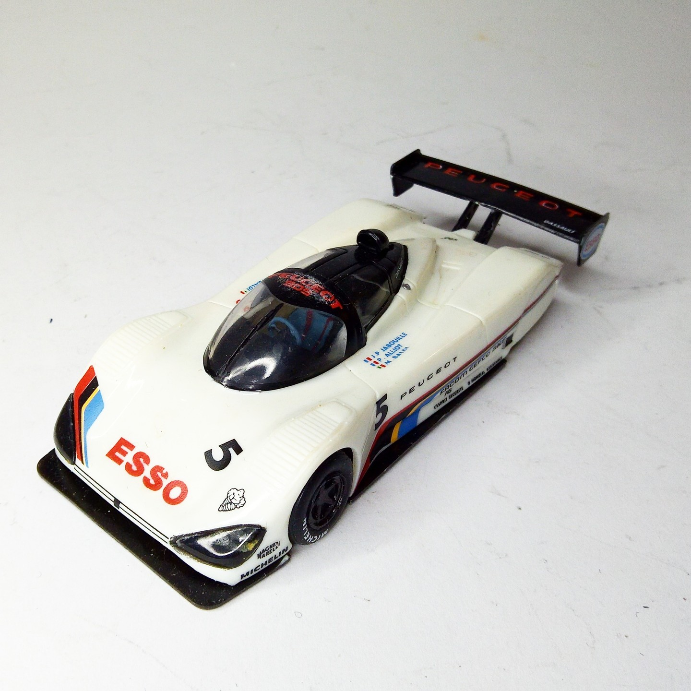
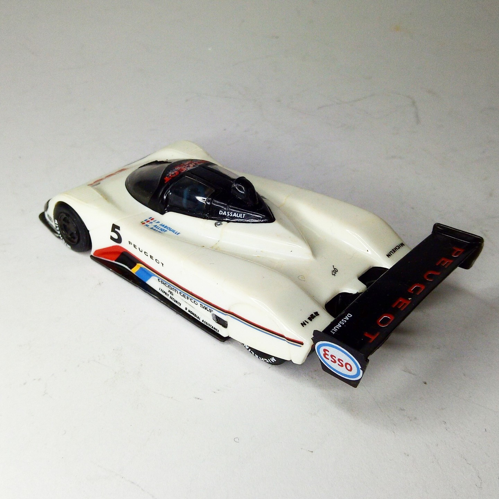

Auto e veicoli stradali · scale model archive
Peugeot 905
Peugeot 905 — Kit: Heller, Scale: 1/43. Raced at LeMans 1990 Interestic aerodynamic concept for the time #1/43 #Heller #Peugeot #905

Photo gallery

English description
Raced at LeMans 1990
Interestic aerodynamic concept for the time
#1/43 #Heller #Peugeot #905
Descrizione italiana
Corse a Le Mans nel 1990. Concetto aerodinamico interessante per l’epoca.